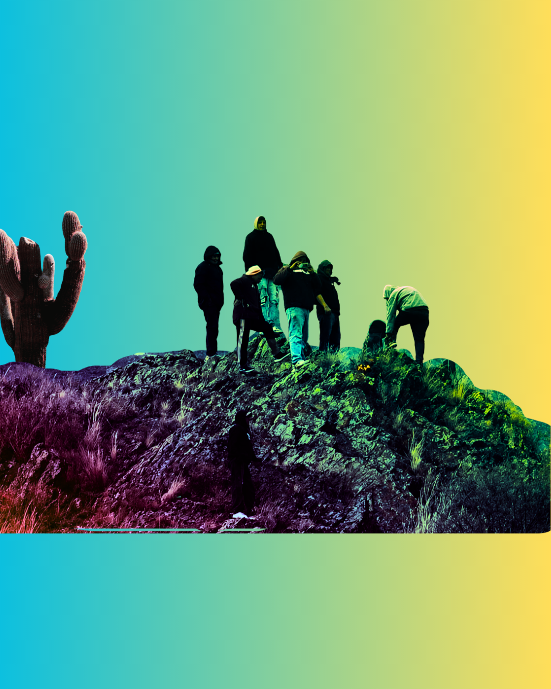
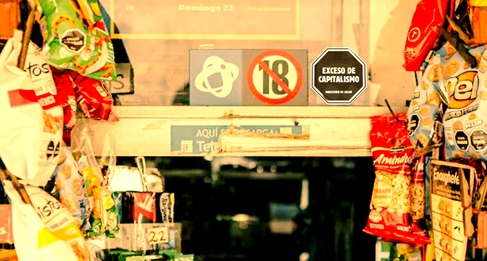

EDITORIAL

EDITORIAL
Agrotóxicos: la banalidad del mal y el rol de la ciencia argentina
El editorial de esta edición analiza el uso indiscriminado de agrotóxicos en el modelo agroindustrial argentino como una expresión de lo que Hannah Arendt denominó "banalidad del mal", la normalización burocrática de prácticas dañinas que, despojadas de reflexión ética, se vuelven rutinarias e incuestionables. La ciencia debe asumir una dimensión política explícita, investigando con rigor pero también con conciencia de sus efectos, y ponerse del lado de las comunidades que sufren el veneno, porque la pregunta de fondo no es técnica sino ética: quién decide, con qué criterios y en beneficio de quién.
ARTÍCULOS DE LA EDICIÓN julio 2026
Artículo
Colonización, educación y resistencia: el boicot académico como herramienta contra el genocidio en Palestina
La Comisión por el Boicot Académico a Israel denuncia la complicidad de las universidades israelíes en el genocidio y escolasticidio en Palestina, y revela que al menos catorce universidades argentinas mantienen convenios vigentes con esas instituciones. Una lectura necesaria para entender el rol de la academia en el apartheid y sumarse a la resistencia global.

ENTREVISTA
Resistencia de la comunidad Diaguita Kallchakí de Las Pailas
Alejandra Pastor (Surfrider Argentina) entrevistó a Liz de la Comunidad Indígena Diaguita Kallchakí "Las Pailas" para la Gaceta Clara Zetkin. Las Pailas es una comunidad integrada por unas 40 familias, tras los episodios del 12 de junio de 2026 en el paraje San Gabriel y el violento operativo de desalojo. Una lucha por la defensa de tierras ancestrales, donde viven desde hace generaciones, incluso antes de la conformación del Estado argentino.

ARTÍCULO
¿Quién decide qué comemos?
La historia de la regulación alimentaria Argentina demuestra que siempre sirvió al capital, no a la salud. Con los decretos de Milei y Sturzenegger (2025-2026) se disuelven la CONAL y el INAL, se elimina la Consulta Pública y se centraliza todo en el SENASA bajo ministerio de Economía. El capitalismo "mata por la boca", no solo a través del hambre, sino también mediante la exposición de la clase trabajadora a alimentos adulterados, contaminados o de calidad dudosa, en nombre de la "libertad de mercado". Cuando los controles se subordinan a lógicas comerciales, la pregunta sobre quién decide qué comemos se vuelve urgente y central, porque la respuesta define si priorizamos la vida o el mercado.
ARTÍCULO
Hacer(se) con otros
La construcción de lo común no requiere acuerdos previos ni identidades homogéneas, sino que se instituye a través de la actividad compartida. La comunicación de la ciencia debe pensarse como una práctica cultural que construye comunidades alrededor del conocimiento. La soberanía cognitiva, entendida como la capacidad de una sociedad para producir y apropiarse colectivamente de su conocimiento, es condición necesaria para que una democracia pueda discutir su propio futuro y no quedar reducida a la lógica del mercado.

NOTA
Carta abierta de una becaria del CONICET al Presidente
Yo no soy lo que este gobierno quiere hacer de mí. Me rehúso a aceptar imperturbable el ostracismo al que pretende arrojarme. Hoy, viernes 31 de julio, es mi último día como Becaria Posdoctoral del CONICET. Esta noche, cuando el reloj marque las 00, seré una desempleada más, otro nombre que se suma a la interminable lista de personas que día tras día se quedan en la calle en este glorioso país.

RESEÑA
Sweet Tooth: los espejismos del pasado y otros mundos posibles
¿Se acuerdan cuando pensamos que la pandemia nos iba a hacer mejores? En 2020, creíamos que del confinamiento saldríamos de esta crisis más solidarios, más conscientes, menos individualistas. La naturaleza se regeneraba, los cielos se despejaban y por un instante pareció que el capitalismo frenaba su marcha. Pero lo que vino después fue exactamente lo contrario. Sweet Tooth nos habla de ese mismo espejismo. Esta bella historia nos propone la organización y la comunidad, aprender a vivir con nuestras heridas, a cuidarnos mutuamente desde nuestras miradas parciales y finitas.